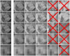

Compiling PCL from source on POSIX compliant systems
Though not a dependency per se, don’t forget that you also need the CMake build system, at least version 3.5.0. Additional help on how to use the CMake build system is available here.
Please note that the following installation instructions are only valid for POSIX systems (e.g., Linux, MacOS) with an already installed make/gnu toolchain. For instructions on how to download and compile PCL in Windows (which uses a slightly different process), please visit our tutorials page.
Contents
Stable
For systems for which we do not offer precompiled binaries, you need to compile Point Cloud Library (PCL) from source. Here are the steps that you need to take: Go to Github and download the version number of your choice. Uncompress the tar-gzip archive, e.g. (replace 1.7.2 with the correct version number):
tar xvf pcl-pcl-1.7.2.tar.gz
Change the directory to the pcl-pcl-1.7.2 (replace 1.7.2 with the correct version number) directory, and create a build directory in there:
cd pcl-pcl-1.7.2 && mkdir build && cd build
Run the CMake build system using the default options:
cmake ..
Or change them (uses cmake-curses-gui):
ccmake ..
Please note that cmake might default to a debug build. If you want to compile a release build of PCL with enhanced compiler optimizations, you can change the build target to “Release” with “-DCMAKE_BUILD_TYPE=Release”:
cmake -DCMAKE_BUILD_TYPE=Release ..
Finally compile everything (see compiler_optimizations):
make -j2
And install the result:
make -j2 install
Or alternatively, if you did not change the variable which declares where PCL should be installed, do:
sudo make -j2 install
Here’s everything again, in case you want to copy & paste it:
cd pcl-pcl-1.7.2 && mkdir build && cd build
cmake -DCMAKE_BUILD_TYPE=Release ..
make -j2
sudo make -j2 install
Again, for a detailed tutorial on how to compile and install PCL and its dependencies in Microsoft Windows, please visit our tutorials page. Additional information for developers is available at the Github PCL Wiki.
Experimental
If you are eager to try out a certain feature of PCL that is currently under development (or you plan on developing and contributing to PCL), we recommend you try checking out our source repository, as shown below. If you’re just interested in browsing our source code, you can do so by visiting https://github.com/PointCloudLibrary/pcl.
Clone the repository:
git clone https://github.com/PointCloudLibrary/pcl pcl-trunk
Please note that above steps (3-5) are almost identical for compiling the experimental PCL trunk code:
cd pcl-trunk && mkdir build && cd build
cmake -DCMAKE_BUILD_TYPE=RelWithDebInfo ..
make -j2
sudo make -j2 install
Dependencies
Because PCL is split into a list of code libraries, the list of dependencies differs based on what you need to compile. The difference between mandatory and optional dependencies, is that a mandatory dependency is required in order for that particular PCL library to compile and function, while an optional dependency disables certain functionality within a PCL library but compiles the rest of the library that does not require the dependency.
Mandatory
The following code libraries are required for the compilation and usage of the PCL libraries shown below:
Note
pcl_* denotes all PCL libraries, meaning that the particular dependency is a strict requirement for the usage of anything in PCL.
Logo |
Library |
Minimum version |
Mandatory |
|---|---|---|---|
Boost |
1.65 |
pcl_* |
|
Eigen |
3.3 |
pcl_* |
|
|  | FLANN |
1.9.1 |
pcl_* |
VTK |
6.2 |
pcl_visualization |
Optional
The following code libraries enable certain additional features for the PCL libraries shown below, and are thus optional:
Logo |
Library |
Minimum version |
Mandatory |
|---|---|---|---|
Qhull |
2011.1 |
pcl_surface |
|
OpenNI |
1.3 |
pcl_io |
|
CUDA |
9.2 |
pcl_* |
Troubleshooting
In certain situations, the instructions above might fail, either due to custom versions of certain library dependencies installed, or different operating systems than the ones we usually develop on, etc. This section here contains links to discussions held in our community regarding such cases. Please read it before posting new questions on the mailing list, and also use the search features provided by our forums - there’s no point in starting a new thread if an older one that discusses the same issue already exists.